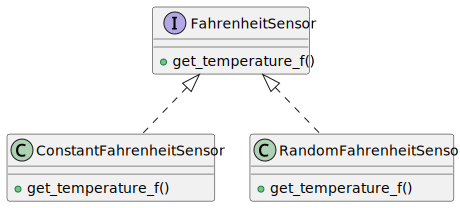
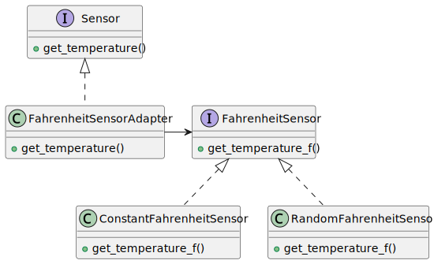

Adapter#
Problem#
The sensor hierarchy of our company covers many different sensors. However, management has decided that our repertoire is not broad enough, and some sensors of another company need to be added. That company has software implementations for those sensors that we could technically use. Naturally, those software implementations do not fit into our hierarchy [1].
What they have, though, is a similar hierarchy (one interface for all their sensors), with the only apparent difference being that they measure in degrees Fahrenheit instead.

/trainings/material/soup/cxx/cxx-code/design-patterns-adapter/sensors-fahrenheit/sensor-fahrenheit.h##pragma once
class FahrenheitSensor
{
public:
virtual ~FahrenheitSensor() {}
virtual double get_temperature_f() = 0;
};
Solution: Adaptation#
Seems like we could be able to integrate all of their sensors in one swoop, easily.

Note
Convert Fahrenheit to Celsius using the following formula:
Exercise#
Implement such an adapter class into our sensor hierarchy, such that the following tests are satisfied. Implement one by one, and take your time.
Basic Adaptation#
#include <gtest/gtest.h>
#include <sensor-fahrenheit.h> // <--- company A's sensor interface
#include <sensor-fahrenheit-const.h> // <--- one of their sensors
#include <sensor-fahrenheit-adapter.h> // <--- to be implemented
#include <sensor.h> // <--- our sensor interface
TEST(adapter_suite, basic)
{
// buy most sophisticated sensor from A, and see if it works
ConstantFahrenheitSensor fs(36.5);
ASSERT_FLOAT_EQ(fs.get_temperature_f(), 36.5);
// adapt it into our hierarchy, converting its Fahrenheit
// measurement into Celsius
FahrenheitSensor_Adapter adapter(&fs);
ASSERT_FLOAT_EQ(adapter.get_temperature(), (36.5 - 32) * 5/9);
}
Adapter Must Be-A Sensor#
/trainings/material/soup/cxx/cxx-code/design-patterns-adapter/tests/adapter-suite-adapter--is-a--sensor.cpp##include <gtest/gtest.h>
#include <sensor-fahrenheit.h>
#include <sensor-fahrenheit-const.h>
#include <sensor-fahrenheit-adapter.h>
#include <sensor.h>
TEST(adapter_suite, adapter__is_a__sensor)
{
ConstantFahrenheitSensor fs(36.5);
FahrenheitSensor_Adapter adapter(&fs);
Sensor* sensor = &adapter; // <--- is-a Sensor
// suppress "unused" warning
(void)sensor;
}
Adaptee Can Be-Any ASensor#
/trainings/material/soup/cxx/cxx-code/design-patterns-adapter/tests/adapter-suite-adapter--knows--an-a-sensor.cpp##include <gtest/gtest.h>
#include <sensor-fahrenheit.h>
#include <sensor-fahrenheit-const.h>
#include <sensor-fahrenheit-adapter.h>
#include <sensor.h>
TEST(adapter_suite, adapter__knows__an_a_sensor)
{
ConstantFahrenheitSensor fcs(36.5);
FahrenheitSensor* fs = &fcs; // <--- convert to root of A's sensor hierarchy
FahrenheitSensor_Adapter adapter(fs);
Sensor* sensor = &adapter; // <--- is-a Sensor
// suppress "unused" warning
(void)sensor;
}
Adapter Is Doing Real Measurements#
Make sure that the adapter is really doing measurement (i.e. use the adaptee) when being asked for its temperature.
/trainings/material/soup/cxx/cxx-code/design-patterns-adapter/tests/adapter-suite-adapter-definitely-knows--a-sensor--HELL.cpp##include <gtest/gtest.h>
#include <sensor-fahrenheit.h>
#include <sensor-fahrenheit-const.h>
#include <sensor-fahrenheit-adapter.h>
#include <sensor.h>
class VariableFahrenheitSensor : public FahrenheitSensor
{
public:
VariableFahrenheitSensor(double initial_value)
: _value(initial_value) {}
void change_temperature(double v)
{
_value = v;
}
double get_temperature_f() override
{
return _value;
}
private:
double _value;
};
TEST(adapter_suite, adapter__definitely_knows__a_sensor__HELL)
{
VariableFahrenheitSensor fs(36.5);
FahrenheitSensor_Adapter adapter(&fs);
ASSERT_FLOAT_EQ(adapter.get_temperature(), (36.5 - 32) * 5/9);
fs.change_temperature(42.7);
ASSERT_FLOAT_EQ(adapter.get_temperature(), (42.7 - 32) * 5/9);
}
Footnotes